Um clube para meninas que estão construindo uma rotina interessante, sem pressa, sem pressão e sem pedir desculpas.
Explorar o clubeMICRO-HÁBITOS • CHECKLIST • DASHBOARD PARA ACOMPANHAR SUA EVOLUÇÃO •
Sou a Julia, estudante de Ciência da Computação, e adoro conteúdos de desenvolvimento pessoal. Acredito que podemos viver uma vida nos orgulhando de nós mesmas, mas sei que isso não é fácil e nem é um processo linear. Por isso, desenvolvi este espaço.
O Clube Delas oferece ferramentas para ajudar você a desenvolver novos hábitos e
acompanhar seu progresso. Por meio de um checklist virtual, você poderá cadastrar
os hábitos que deseja desenvolver e registrar suas conquistas.
Além disso, terá um dashboard que reunirá essas informações de forma visual,
permitindo acompanhar sua evolução, identificar sua constância e perceber o quanto
já avançou.
“Você não precisa se tornar outra pessoa de um dia para o outro. Basta dar pequenos passos, todos os dias, em direção à pessoa que deseja ser.”
Melhorar 1% a cada dia. Comece pequeno: arrume a cama, beba água, anote uma meta. Constância vence intensidade.
✦ Torne fácil: separa 15 minutos para você se dedicar
✦ Torne satisfatório: marque no checklist
✦ Exemplo disso: foi quando iniciei
no esporte e eu precisava desenvolver flexibilidade, eu não tinha tempo, trabalhava
muito mas separei 15 minutos e
Todos os dias eu me alongava um pouco e deu certo!
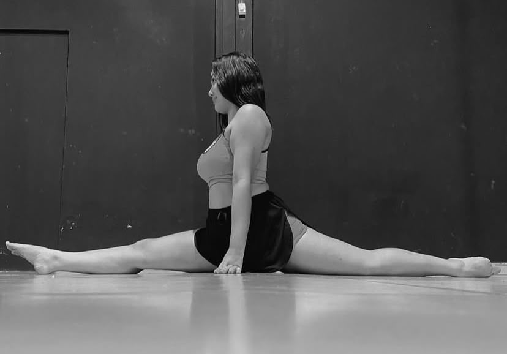
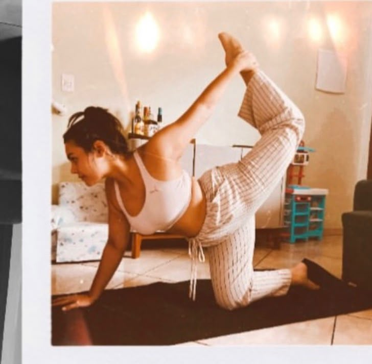
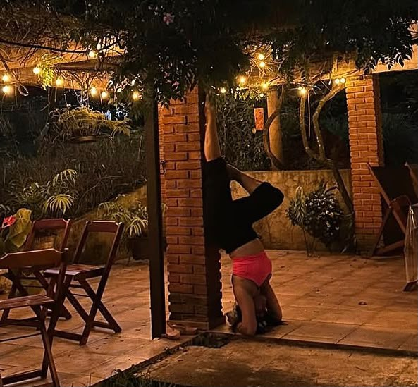
Os livros que viraram chave pra mim e algumas formas de transformar a leitura em hábito.
✦ Hábitos Atômicos — James Clear
✦ 10 páginas por dia já é muito
✦ Leve um livro sempre na bolsa ou o maravilhoso Kindle
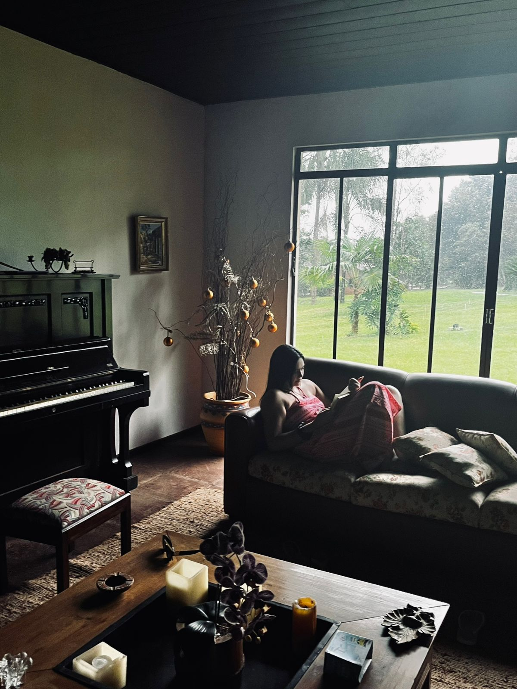
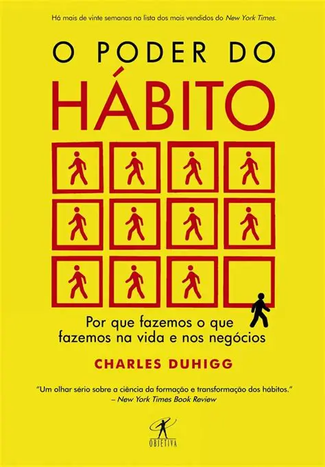
Ter algo só seu te deixa mais interessante pra você mesma. Teste sem medo de ser ruim no começo
✦ Esportes de todas as modalidades
✦ Música: teclado básico
✦ Escrever, desenhar, criar
✦ Toda vez que achava algo interessante, eu tentava nas horas vagas do trabalho, até conseguir, o próximo hobby que eu quero desenvolver é cerâmica fria por exemplo
Estudar no próprio ritmo, respeitando seu cérebro — inclusive com TDAH.
✦ Pomodoro de 25 minutos
✦ Metas SMART semanais
✦ Revise antes de dormir
✦ Na época do cursinho, a NOC foi um divisor de águas para mim. Eu trabalhava muito, tinha pouco tempo para estudar e ainda não possuía uma boa base legal para fazer os vestibulares das matérias, nunca tinha tido aula de física por exemplo. Por isso, eles desenvolveram um cronograma que me ajudou a construir os conhecimentos básicos para cada disciplina e, aos poucos, aprofundar meus estudos em tópicos específicos.
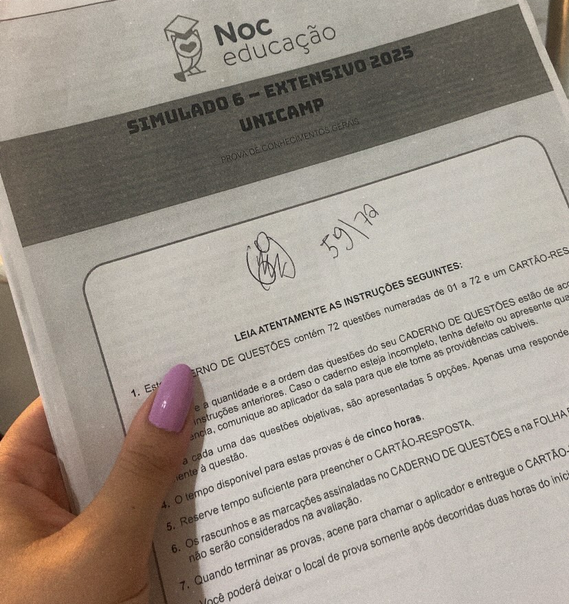
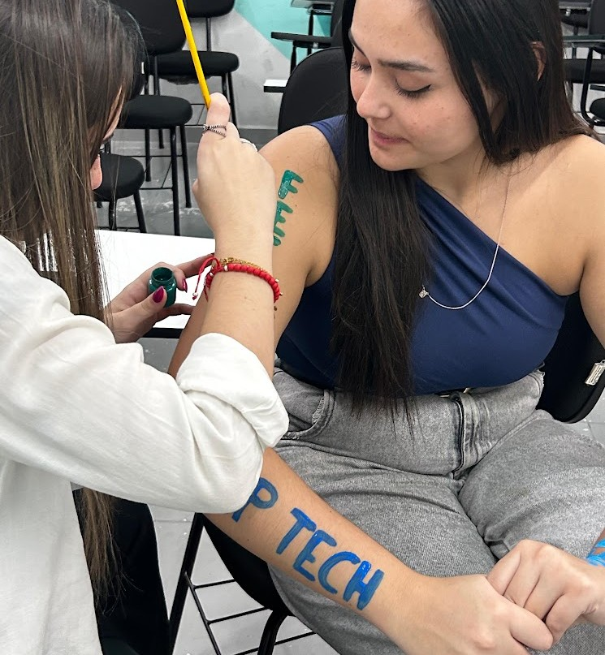
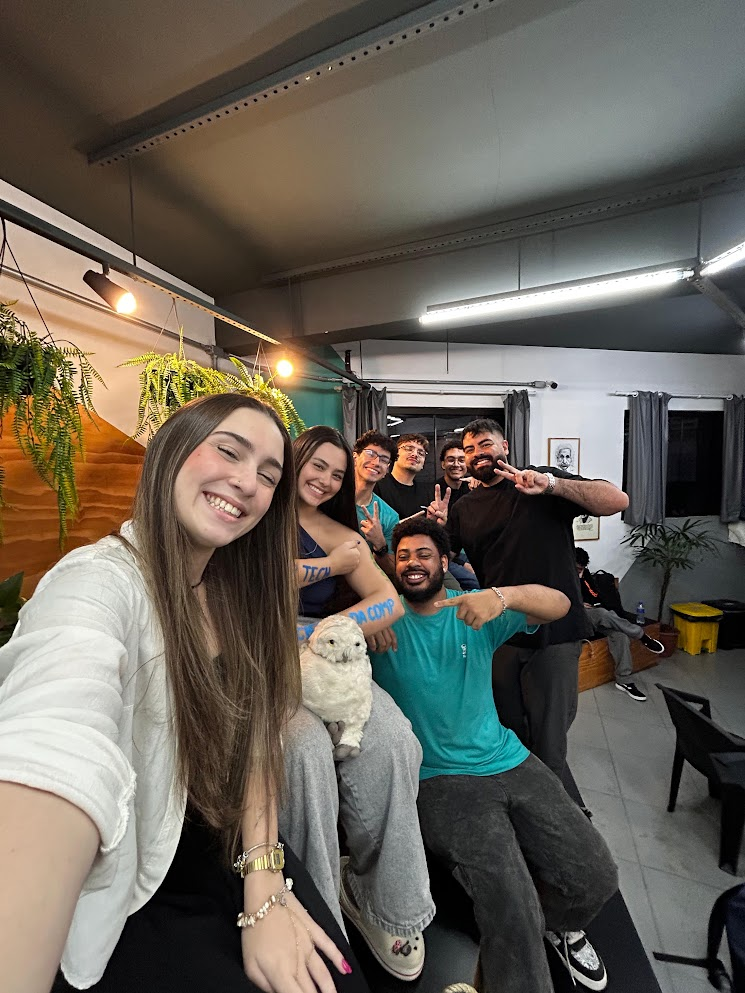
Cuidar de si de acordo com a sua rotina, sem cobrança absurda e sem comparação.
✦ Skincare simples de manhã e à noite
✦ Movimente o corpo
✦ Durma bem: é hábito também
✦ Eu não era vaidosa, mas tinha muitos problemas com a minha autoestima. Fui começando a criar gosto e hábito de me cuidar e comecei a compartilhar todos os hábitos com as meninas que me seguem. Eu era muito indisciplinada com skincare, fazer as unhas e gostar de roupas. Fui começar a me importar e gostar dessas coisas há pouco tempo. Hoje, amo me cuidar, é uma prioridade, mas não foi sempre assim.
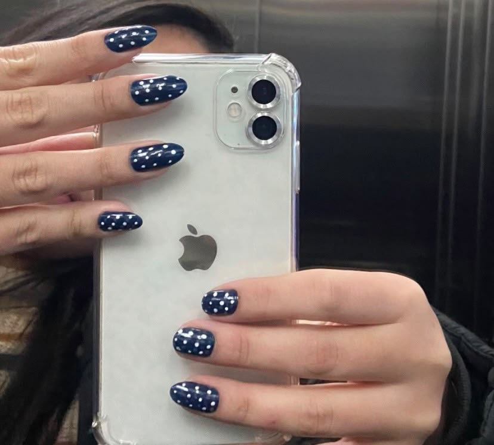
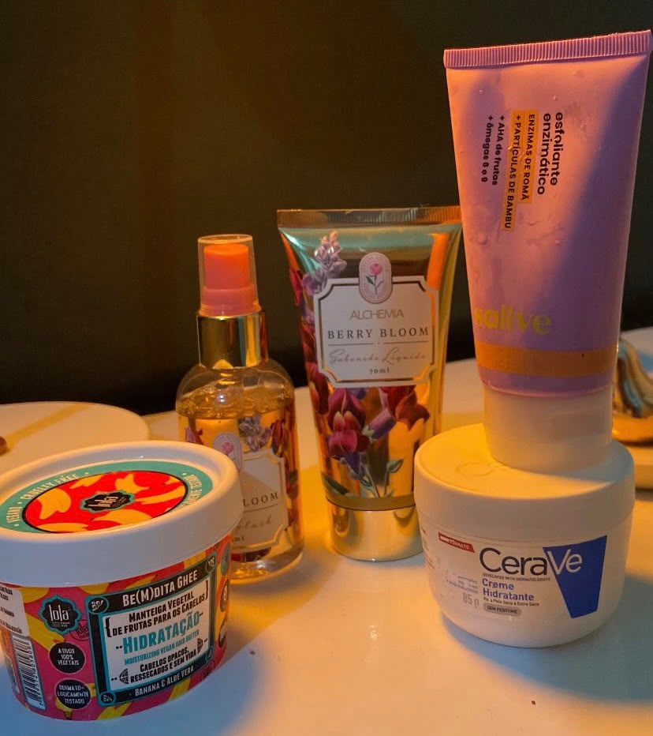
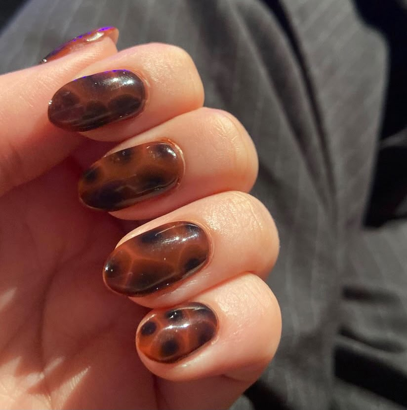
✦ Responda às quatro perguntas para entrar no clube
Crie sua conta e acompanhe seus hábitos no checklist diário.
FAZER PARTE